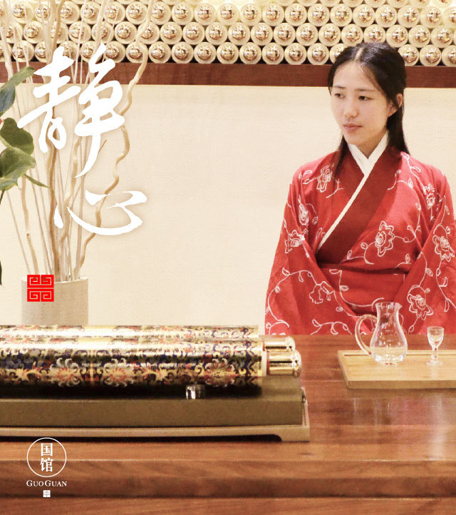
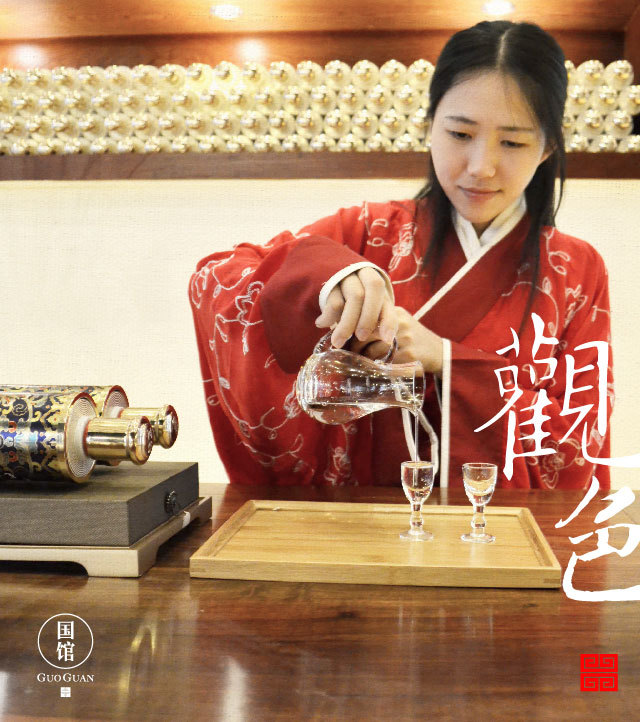
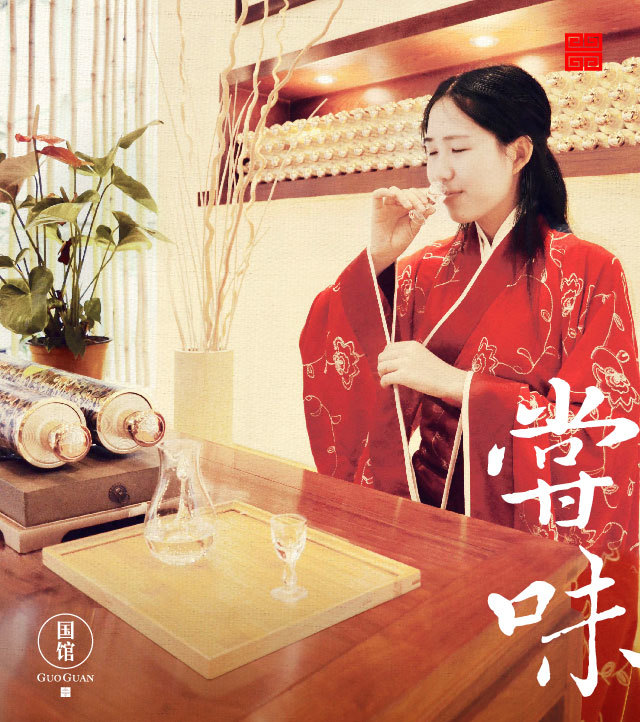

品酒需要放松安静，情绪平和，若是品酒时心情不佳，你甚至只能尝到酒的苦味。
好酒目测纯净度极高，酒液呈无色透明或是微黄。晃动酒杯，顶级好酒挂杯均匀如丝绸。斟满酒杯观察液面，液面高出杯沿而不外溢，圆润饱满。
将酒杯举起，置酒杯于鼻下二寸处，头略低，轻嗅其气味。酒越好，给予嗅觉感觉的体验就越舒适。
轻啜一口，在嘴中含而不动持续30秒，再滚动舌头，使酒液布满口腔，再微微抬起头，使酒液沿舌头两侧流向舌根。
空杯留香是鉴别酒体的重要方式，好酒空杯甚至可持续数日。也可以滴几滴酒在手心搓，然后嗅闻余味是否强烈持久。
个人品酒体验或有差别，但有一条是共通的：醉的浅，醒的快，饮时舒适愉悦，饮后无不适感，是为绝妙好酒。
阅读原文